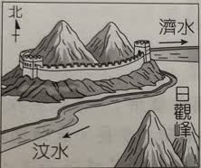
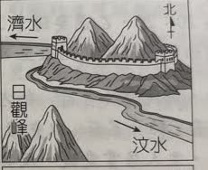
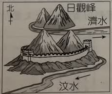
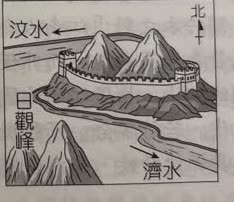
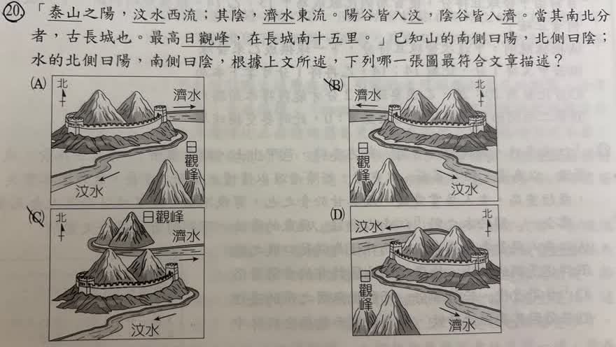

分享原卷｜第20題
完整原題
作答所需文章／材料
「泰山之陽，汶水西流；其陰，濟水東流。陽谷皆入汶，陰谷皆入濟。當其南北分者，古長城也。最高日觀峰，在長城南十五里。」



已知山的南側曰陽，北側曰陰；水的北側曰陽，南側曰陰；根據上文所述，下列哪一張圖最符合文章描述？
(A) 圖A
(B) 圖B
(C) 圖C
(D) 圖D
先想一想，再查看答案、解說與原圖
原卷作答：A
正確答案：A。濟水在北向東流，汶水在南向西流，日觀峰在長城南方。
逐項解析
| 選項與原句 | 判讀 | 句意與判斷理由 |
|---|---|---|
| (A) 圖A | 應選 | 濟水北側向東、汶水南側向西，且日觀峰在長城南方，全部符合。 |
| (B) 圖B | 不選 | 兩條河的流向反了。 |
| (C) 圖C | 不選 | 日觀峰在長城北側，與原文相反。 |
| (D) 圖D | 不選 | 濟水與汶水的南北位置顛倒。 |
詳細說明與解題步驟
【逐項把文句變成圖形條件】
1.「泰山之陽，汶水西流」：山南為陽，所以汶水在泰山南側，向西流。指北箭頭向上時，西是左方。
2.「其陰，濟水東流」：山北為陰，所以濟水在泰山北側，向東、即右方流。
3.「當其南北分者，古長城也」：以古長城作山南、山北的分界。
4.「日觀峰，在長城南十五里」：日觀峰在長城南方，應畫在長城下方。
【比對四圖】
A三項同時符合：北側濟水向右、南側汶水向左、日觀峰在長城南側。B的兩河流向與本文相反；C把日觀峰放在長城北側；D把濟水、汶水的南北位置顛倒，因此選A。
【避免混淆】
本題先按「山南陽、山北陰」定位，再看東西流向。題目也提供水北為陽、水南為陰，但不能因此把「泰山之陽」誤當成河的北岸。圖中所謂最高日觀峰是原文的表述，本題依文章判圖，不另以現代測量改寫原文。
核對註記：已依原卷或完整文字核對並獨立解題；對應教材課次未確認，歸綜合。
原圖（僅本題）
